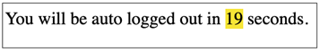
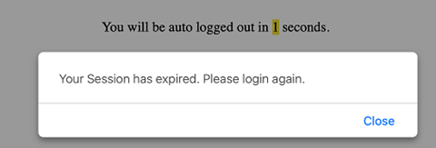

Limites de temps
Aperçu : Limites de temps
Les limites de temps constituent un obstacle potentiel pour les personnes qui ont des handicaps tels que la cécité, la malvoyance, un trouble de dextérité ou une limitation cognitive. Ces utilisateurs peuvent avoir besoin de plus de temps pour lire le contenu ou exécuter une tâche, par exemple remplir un formulaire en ligne. Les directives WCAG exigent que tout contenu comportant des limites de temps offre l’une des fonctionnalités suivantes :
- Désactiver
- L’utilisateur peut désactiver la limite de temps avant qu’elle soit activée.
- Ajuster
- L’utilisateur peut ajuster la limite de temps avant qu’elle soit activée à une durée d’au moins dix fois la valeur par défaut.
- Prolonger
- L’utilisateur est averti avant l’expiration du délai et dispose d’au moins 20 secondes pour prolonger la limite de temps.
Tout processus qui survient sans activation par l’utilisateur après un délai défini ou périodiquement est considéré comme une limite de temps. Cela comprend l’actualisation partielle ou complète d’un contenu (comme un rafraîchissement de page), des changements apportés au contenu et l’expiration d’un délai permettant à un utilisateur de réagir à une demande d’action. Il peut également s’agir de contenu qui est actualisé trop rapidement pour que l’utilisateur puisse le lire ou le comprendre – tout contenu animé, mobile ou défilant.
Exemples :
- Un formulaire comportant une limite de temps offre une commande qui permet à l’utilisateur de désactiver cette fonction ou de prolonger le délai jusqu’à dix fois la valeur par défaut.
- Après une période d’inactivité de l’utilisateur, un script côté client demande à l’utilisateur s’il a besoin de plus de temps. Si le script n’obtient pas de réponse dans les 20 secondes, le délai expire.
- Un site affichant une bannière rotative offre une commande qui permet à l’utilisateur de prolonger le délai entre les actualisations jusqu’à dix fois le délai par défaut.
- Un site affichant une bannière rotative offre un bouton pause.
- Une page affichant du texte animé en défilement constant qui apparaît et disparaît à l’écran offre un bouton pause.
Pour les sessions comportant un délai d’expiration, présentez des messages d’avertissement dans une boîte de dialogue contextuelle avec des options permettant à l’utilisateur de prolonger ou de terminer la session. ( ARIA Dialog pattern et WET Expiration de la session sont décrits dans le module 12.)
Pour les minuteries comportant des échéances fixes, offrez un compte à rebours avec annonces ARIA live à des intervalles appropriés. Voir l’exemple dans la section précédente, Bon exemple : Compte àrebours annoncé à intervalles réguliers
Lorsqu’une page est rafraîchie ou rechargée, le système doit demander
la permission de l’utilisateur. Le rafraîchissement/rechargement
automatique des pages peut causer des difficultés pour les personnes
ayant des déficiences motrices, malvoyantes, aveugles et ayant
certaines limitations cognitives. Les utilisateurs de lecteur d’écran
pourraient ne pas avoir suffisamment de temps pour trouver leur place
avant que la page ne se rafraîchisse. La bonne pratique consiste
plutôt à avertir l’utilisateur que du contenu plus récent est
disponible et à lui offrir des options pour actualiser le contenu ou
poursuivre avec l’ancien contenu. Si l’actualisation du contenu est
urgente, utilisez une boîte de dialogue contextuelle et déplacez le
focus de l’utilisateur vers celle-ci; ou encore, utilisez une alerte
visuelle ARIA live region avec role="alert".
Bon exemple : Expiration de session
Dans cet exemple, après 15 secondes d’inactivité, JavaScript est
activé et déplace le focus de l’utilisateur vers une boîte de dialogue
contextuelle qui utilise l’attribut role="alertdialog". L’utilisateur
peut choisir de continuer ou de terminer la session. Si l’utilisateur
clique sur Continuer la session, JavaScript réinitialise le compteur
de 15 secondes. Si l’utilisateur clique sur Terminer la session,
JavaScript quitte la page.
Ouvrez l’exemple d’expiration de session (s'ouvre dans un nouvel onglet).
Voir le CSS
Début du code
#modalOverlay {
width:100%;
height:100%;
top: 50%;
left: 50%;
position: absolute;
}
[role=alertdialog] {
position: relative;
width: 80%;
margin-left: -40%;
height: 400px;
margin-top: -200px;
padding: 5px;
border: thin #000 solid;
background-color:#fff;
}Fin du code
Voir le Javascript
Pour contourner un bogue de focus dans VoiceOver, JavaScript masque l’élément <main> avec aria-hidden="true" et le code CSS display: none, puis une milliseconde plus tard, le script l’annule.
Début du code
startTimeout();
function startTimeout(){
setTimeout(function(){
$('main').attr('aria-hidden','true').css('display','none');
setTimeout(function(){
$('main').attr('aria-hidden','true').css('display','inherit');
}, 1);
$('body').attr('style','background-color:gray;');
$('a').attr('tabindex','-1');
$('a').attr('style','cursor:default;');
$('button').attr('disabled','true');
var modalOverlay = $('<div>').attr({id:"modalOverlay"});
$(modalOverlay).appendTo('body');
var dialog = $('<div>').attr({role:"alertdialog", "aria-labelledby":"alertHeading", "aria-describedby":"alertText"});
$(dialog).html('
<h1 id="alertHeading">Expiration de session!</h1>
<div id="alertText">
<p>En l’absence d’activité, votre session expirera dans 2 minutes. Si vous avez besoin de plus de temps, veuillez cliquer sur « Continuer la session ». Pour laisser expirer la session, veuillez cliquer sur « Terminer la session ».</p>
</div>
<button id="continue">Continue Session</button>
<button onclick="window.location.href = "https://accessible.canada.ca/"> Terminer la session </button>').appendTo('#modalOverlay');
$('#continue').focus();
$('#continue').click(function(e) {
$('main').attr('aria-hidden','false');
$('body, a').removeAttr('style');
$('a').removeAttr('tabindex');
$('button').removeAttr('disabled');
$(modalOverlay).remove();
$(dialog).remove();
startTimeout();
});
}, 15000);
}
Fin du code
Référence : Paul J Adam, Session timeout alertdialog
Mauvais exemple : Expiration de session sans option de prolongation
L’expiration d’une session sans avertissement approprié peut mener à de la frustration et à une perte de travail. Cet exemple montre un message d’avertissement à l’utilisateur sans possibilité de continuer à prolonger la session. De plus, le compte à rebours ne comporte pas de région ARIA en direct.
L'exemple commence
 L'exemple finit
HTML
Début du code
<div>
Vous serez automatiquement déconnecté dans <span id="timeOut">19</span> secondes.
</div>
Fin du code
CSS
Début du code
#timeOut { background-color: rgb(247, 231, 14); }Fin du code
Voir le JavaScript
Début du code
var IdlelTimeOut = 20; //10 seconds
var idleSecondsTimer = null;
var idleSecondsCounter = 0;
document.onclick = function () { idleSecondsCounter = 0; };
document.onmousemove = function () { idleSecondsCounter = 0; };
document.onkeypress = function () { idleSecondsCounter = 0; };
idleSecondsTimer = window.setInterval(CheckIdleTime, 2000);
function CheckIdleTime() {
idleSecondsCounter++;
var oPanel = document.getElementById("timeOut");
if (oPanel) {
oPanel.innerHTML = (IdleTimeOut - idleSecondsCounter);
}
if (idleSecondsCounter >= IdealTimeOut) {
window.clearInterval(idleSecondsTimer);
alert("Votre session est expirée. Veuillez ouvrir une nouvelle session.");
window.location = "https://bati-itao.github.io/";
}
}
Fin du code
Mauvais exemple : JavaScript rafraîchit automatiquement une page
HTML
Début du code
<head>
<script type="text/JavaScript">
function AutoRefresh( t ) {
setTimeout("location.reload(true);", t);
}
</script>
</head>
<body onload="JavaScript:AutoRefresh(5000);">
<p>Cette page sera rafraîchie toutes les 5 secondes.</p>
</body>Fin du code
Ressources WCAG connexes
Ressources WCAG connexes
Critères de succès
Techniques
Situation A : S’il y a des limites de temps associées à une session
- G133 : Proposer une case à cocher sur la première page d'un formulaire multipages permettant à l'utilisateur de demander une limite du temps de session plus longue ou un temps de session sans limite (en anglais)
- G198 : Fournir à l'utilisateur une façon de désactiver la limite de temps (en anglais)
Situation B : Si une limite de temps est contrôlée par un script sur la page
- G198 : Fournir à l'utilisateur une façon de désactiver la limite de temps (en anglais)
- G180 : Fournir à l'utilisateur une façon de fixer la limite de temps à 10 fois la durée par défaut (en anglais)
- SCR16 : Fournir un script qui avertit l'utilisateur que le délai va expirer (en anglais) ET SCR1 : Permettre à l'utilisateur de prolonger le délai par défaut (en anglais)
Situation C : Si la lecture est limitée dans le temps
- G4 : Permettre de mettre le contenu en pause et de redémarrer là où il a été mis en pause (en anglais)
- G198 : Fournir à l'utilisateur une façon de désactiver la limite de temps (en anglais)
- SCR33 : Utiliser un script pour faire défiler le contenu et fournir un mécanisme pour le mettre en pause (en anglais)
- SCR36 : Fournir un mécanisme permettant à l'utilisateur d'afficher le texte en mouvement, défilant ou mis à jour automatiquement dans une fenêtre ou une zone statique (en anglais)